MACHINE LEARNING.
Ahora sos una IA de aprendizaje automático, conocida como Machine Learning. Dejaste de depender de órdenes fijas preestablecidas para aprender por tu cuenta a partir de la experiencia.
REGLAS
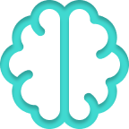
EXPERIENCIA
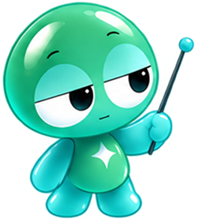
1950
Primer caso de Machine Learning
Arthur Samuel publicó métodos que permiten a un programa de damas mejorar con la experiencia
1990
En la década del 90 lo cambió todo
Se pasa de un enfoque guiado por el conocimiento a uno donde las computadoras analizan miles de datos para sacar conclusiones (aprender)
2006
Nace el aprendizaje profundo
Red neuronal artificial formada por capas con conceptos cada vez más complejos
2012
Despegue del
Machine Learning
Una red neuronal (AlexNet) gana un concurso de reconocimiento de imágenes superando ampliamente al resto de los participantes
2014
Machine Learning
genera imágenes
(GAN) Modelos generativos de Deep Learning en los que dos redes neuronales entrenan una contra otra: un generador que fabrica datos sintéticos y un discriminador que intenta descubrirlos
Ayudame a aprender: vas a clasificar datos
moviendo tus manos.
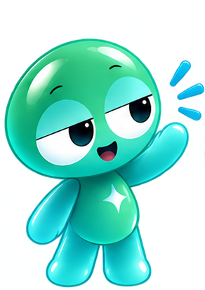
Observá que hay dos tipos de datos
(gatos y bicicletas)
Gatos
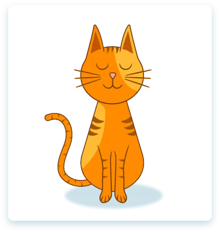
Bicicletas
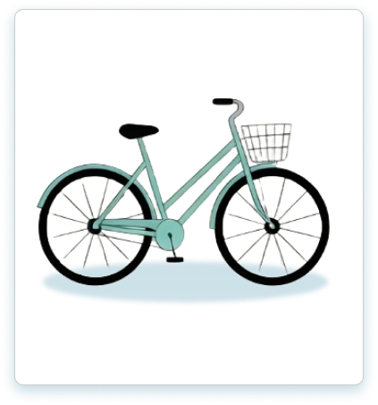
Dato 1 de 4
Soltá acá
mano derecha
Soltá acá
mano izquierda
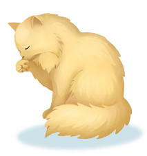
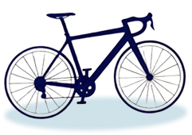
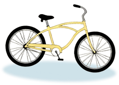
Arrastrá hacia vos la mano derecha si es un gato o la mano izquierda si es una bicicleta
¡Ups! Ese no va ahí, probá para el otro lado
¡Muy bien! Clasificaste todos los datos
Recién hiciste lo mismo que hace el Machine Learning: le mostraste ejemplos con su respuesta («esto es un gato», «esto es una bicicleta»). Con muchísimos ejemplos así, la computadora descubre los patrones por su cuenta y aprende a reconocer imágenes que nunca vio.
1. Le das ejemplos
2. Encuentra patrones
3. Reconoce lo nuevo
2014
GANs (redes antagónicas)
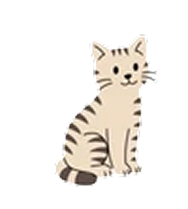
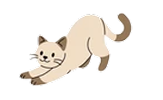
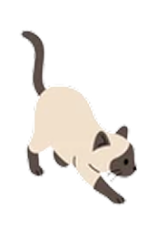
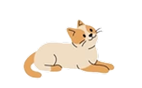
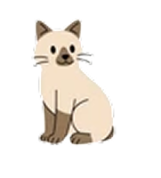
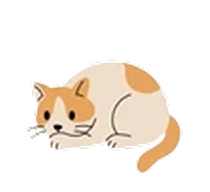
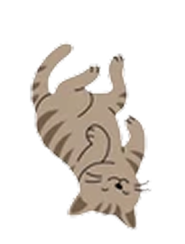
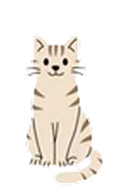
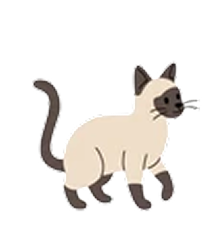
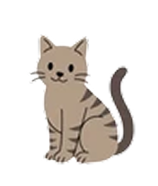
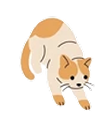
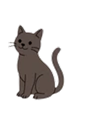
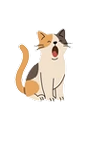
Analizaste miles
de imágenes
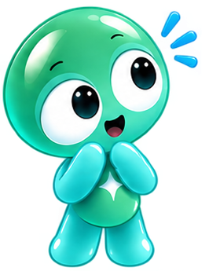
Una cabeza (dos orejas,
boca, nariz, dos ojos, etc.)
Torso (color, forma,
cuatro patas, etc.)
Cola (largo, color, forma,
postura, etc.)
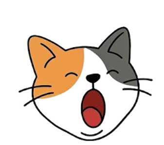
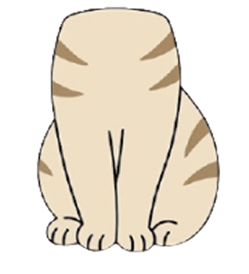
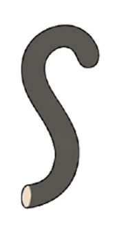
Entendiste la estructura
interna de una imagen
Combinar patrones para
generar nuevas imágenes
Reconstruir partes
faltantes de una foto
Ahora podés:
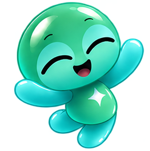
Vas a observar unos peces y después
vas a dibujar uno nuevo con el lápiz.
Referencias
Lo que vio la computadora
Tu pez
Insertá la memoria TRES
en la ranura